Paulo Bittencourt’s Artistic Life
I was born in 1966 in Castro, Brazil, but spent my childhood in Rio de Janeiro. My mother took me (and my three brothers) to the Adventist Church. At the age of 22, I stopped being a sheep and became a freethinker.
I’ve always enjoyed drawing, photographing and singing. Singing ended up becoming the main way I express myself artistically.
These are just a few of the many artistic stations of my life.
I was the bass of a gospel quartet at the Paraná Adventist Institute, a boarding school in the Maringá region. Our quartet even performed at a festival in Curitiba, Paraná’s capital. I sang also in this school’s choir and was often invited to sing solos (1982).
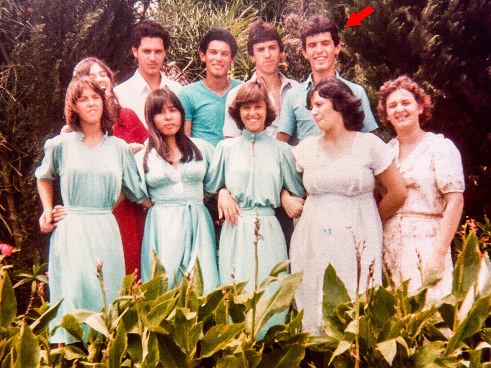The same quartet, with some of the girls from the choir (1983).
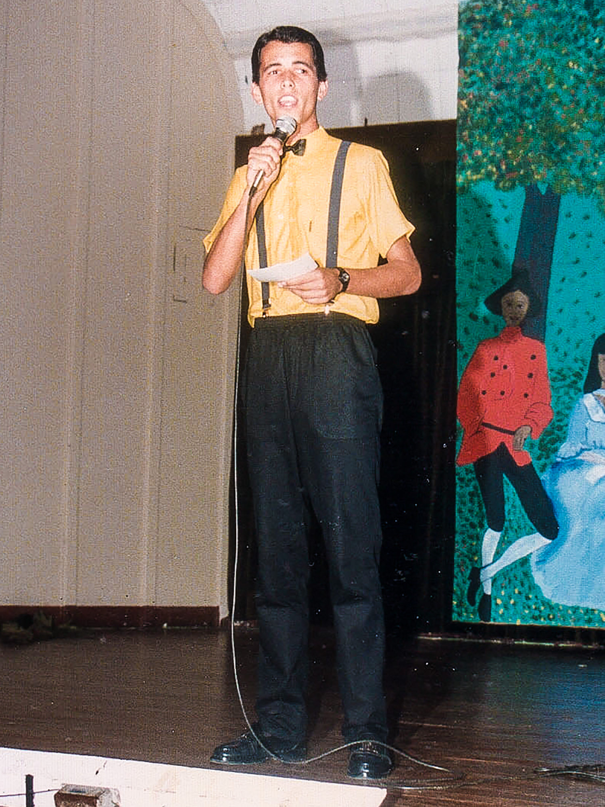In 1987, I went to study Theology at the Adventist Institute of Education, a boarding college in São Paulo, to become a church pastor. With my head full of questions, two and a half years later I abandoned my studies and, with the 600 dollars I had earned selling bibles door to door, went on an adventure to Europe, where I ended up staying. At the Theology college, I sang in the choir, but also did a lot of solos. I had been considered to become the baritone of the Brazilian The King’s Heralds Quartet, a kind of The Beatles of the Adventist Church.
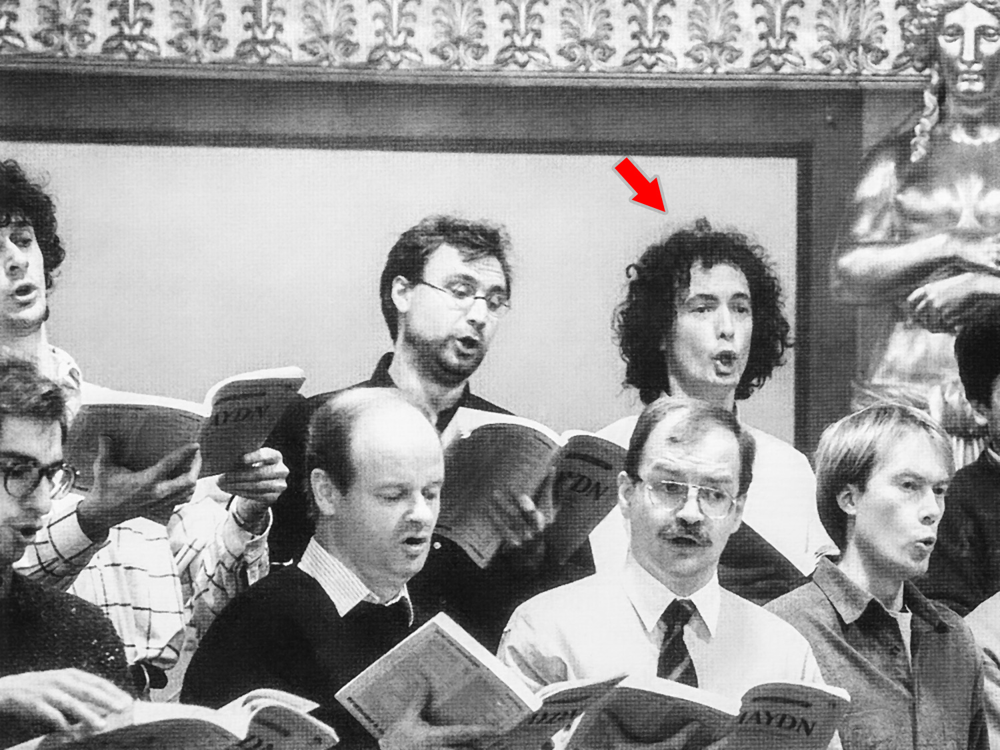I moved to Europe in 1989. After a short stay in Portugal, France, England and Germany, I ended up in Austria, where I stayed and, at the Konservatorium der Stadt Wien, studied Opera Singing. In the photo, I’m at a rehearsal of the Arnold Schoenberg Choir for a concert at the Musikverein, in Vienna (1994). With this choir, I performed also at the famous Carnegie Hall, in New York.
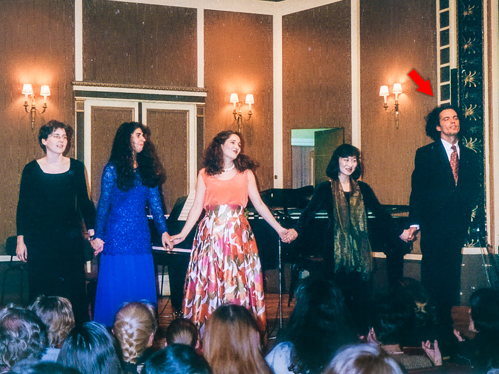A concert of music by Heitor Villa-Lobos, at the Boesendorfer Saal, in Vienna, whose objective was to raise public awareness of the problems faced by the indigenous peoples of the Amazon, especially the Yanomami (1996). I sang Three Indigenous Poems.
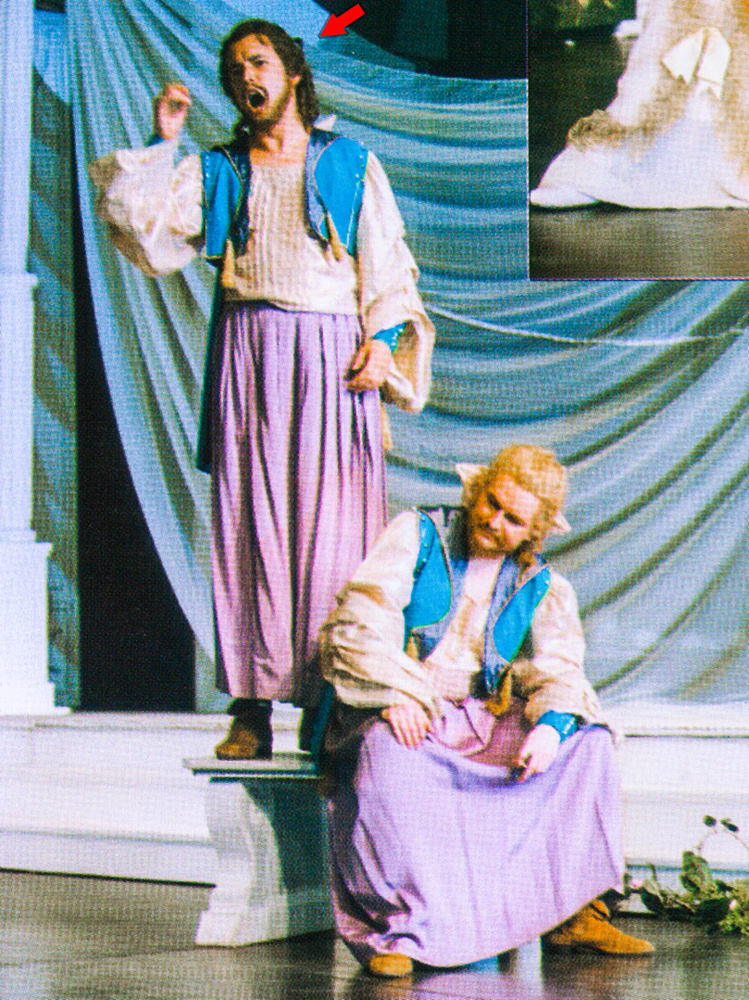In 1995, I was hired by the largest German-language theater, the Vienna Burgtheater. One of the plays I took part in was performed also in Berlin. In the photo, I’m wearing a costume from the play Orpheus in the Underworld (1996).
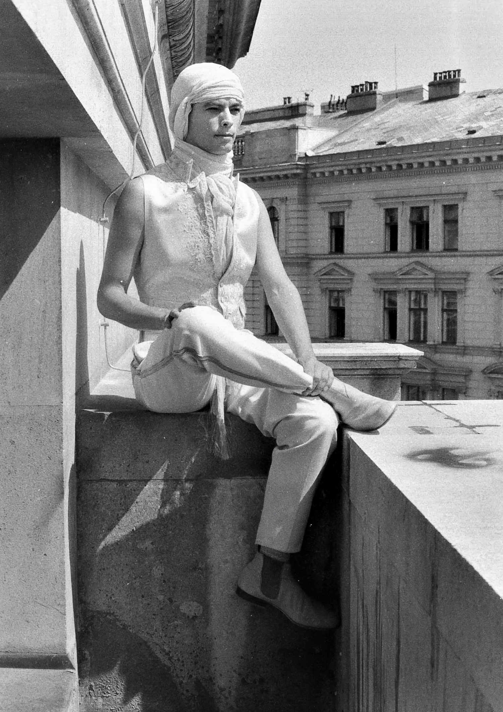In another costume from the same play.
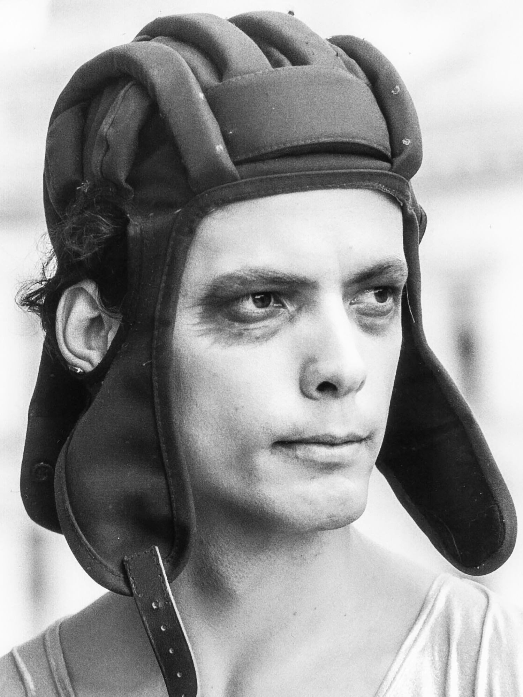In the dressing room of the Akademie Theater, in Vienna (1997).
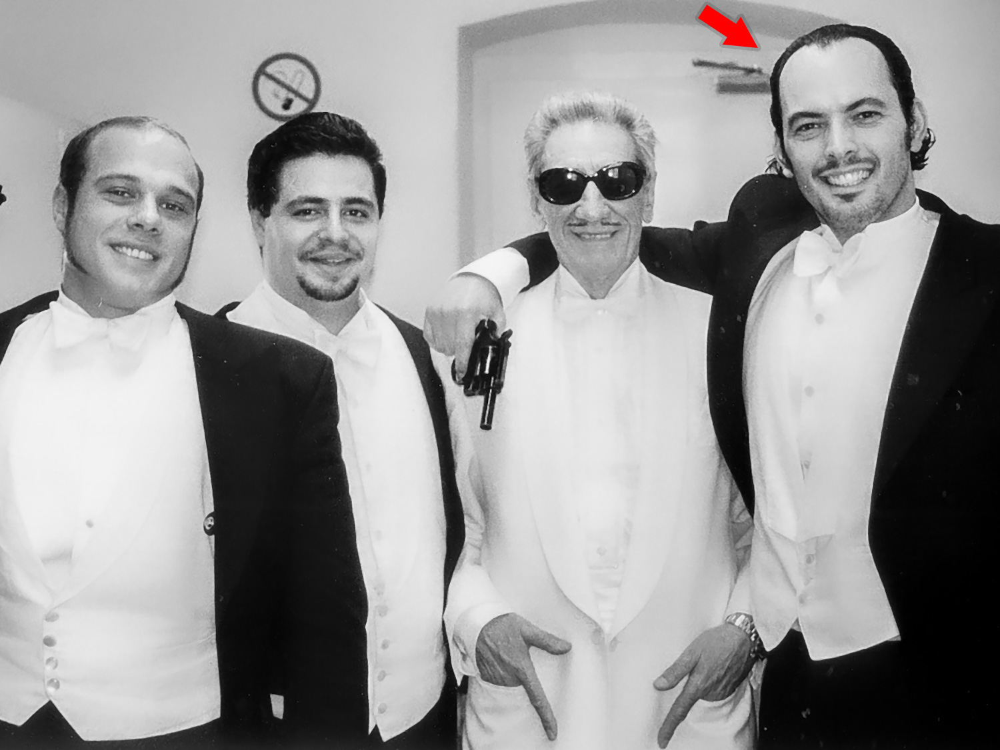With fellow actors, in another play.
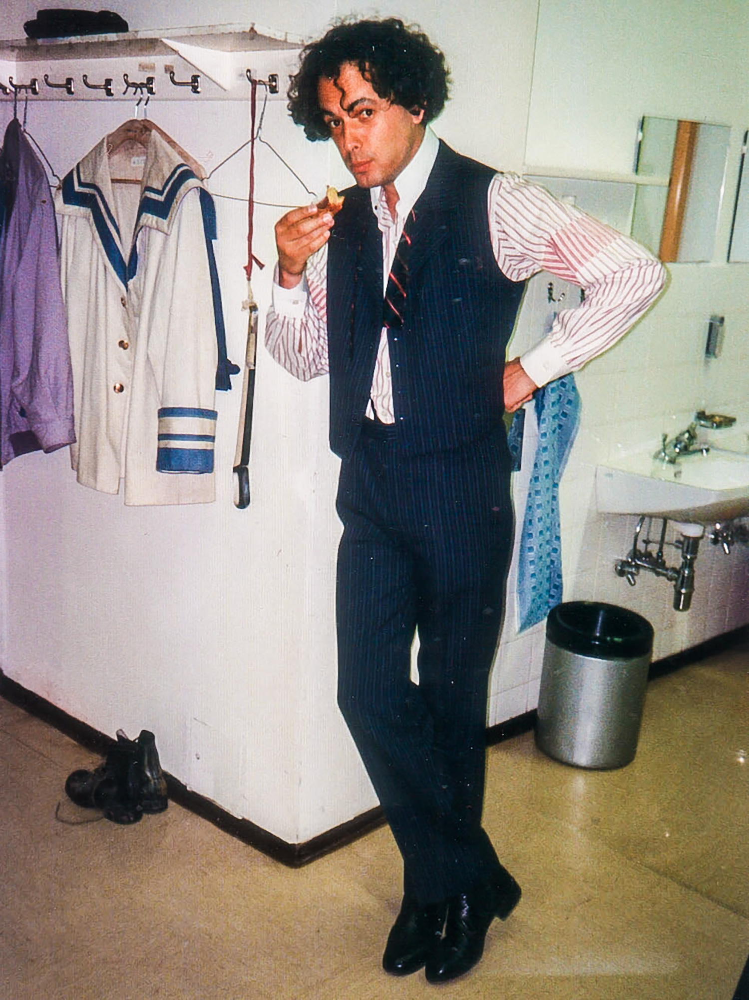With fellow actors, in another play of the Akademie Theater (1988). The bespectacled gentleman was an icon of Austrian theater.
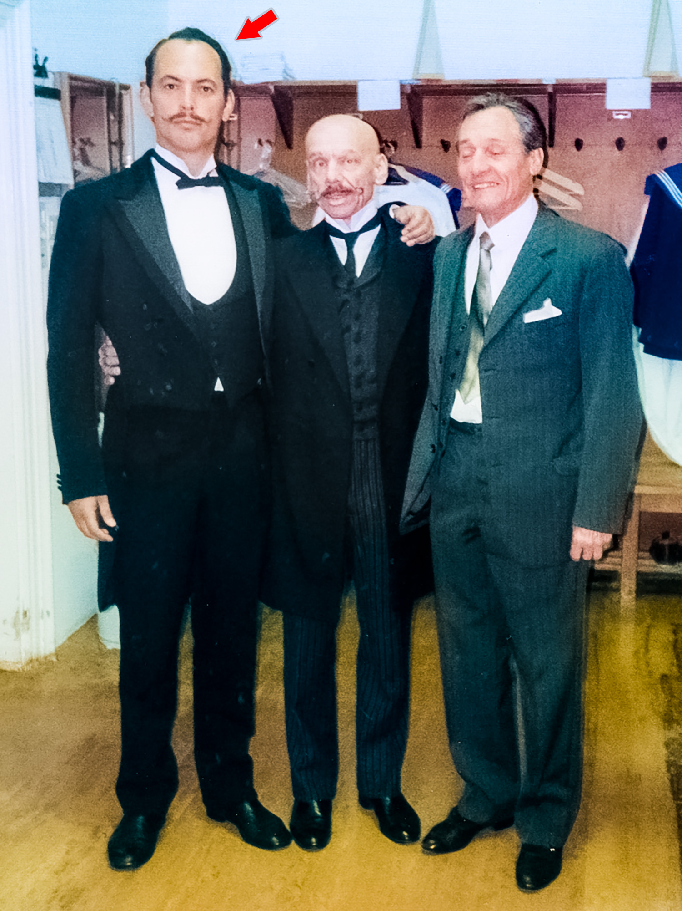A Burgtheater poster announcing the play for that evening: Troilus and Cressida, by William Shakespeare. My part: Antenor.
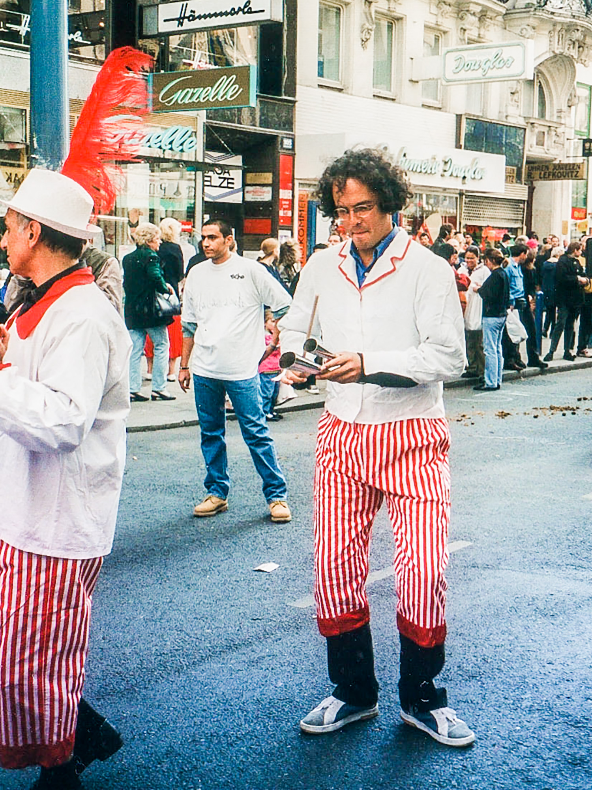Playing Guglielmo, from the opera Così Fan Tutte, by Wolfgang Amadeus Mozart, at the Stadttheater, in Baden, Austria (1999).

Playing agogô (an Afro-Brazilian instrument) in a parade of traditional music from different cultures, in Vienna (1996).
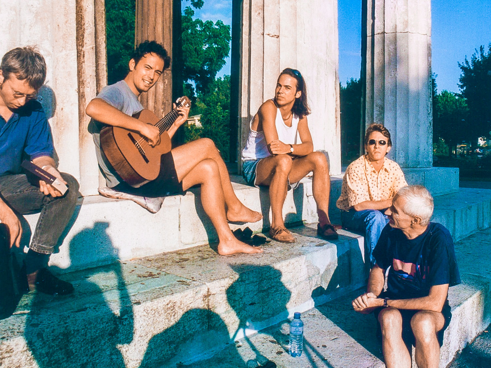Playing and singing bossa nova in Volksgarten park, in the center of Vienna (1999). One day, I passed by there and saw and heard an Austrian playing bossa nova, which I, despite being Brazilian, barely knew. I was so enchanted that I bought a guitar and, learning by doing, began playing (and singing) in this park myself, which is in front of the Parliament. It became a meeting point, sometimes even with beer or wine.

Playing and singing bossa nova, at a political event behind the city hall, in the center of Vienna, organized by an immigrant human rights NGO, SOS Mitmensch (2015).

On two full pages of the newspaper Der Standard, in an awareness campaign about the different cultures present in Austria (1996). The name of this place is Heldenplatz, in the center of Vienna. “Sprache verbindet” means “Language unites”.
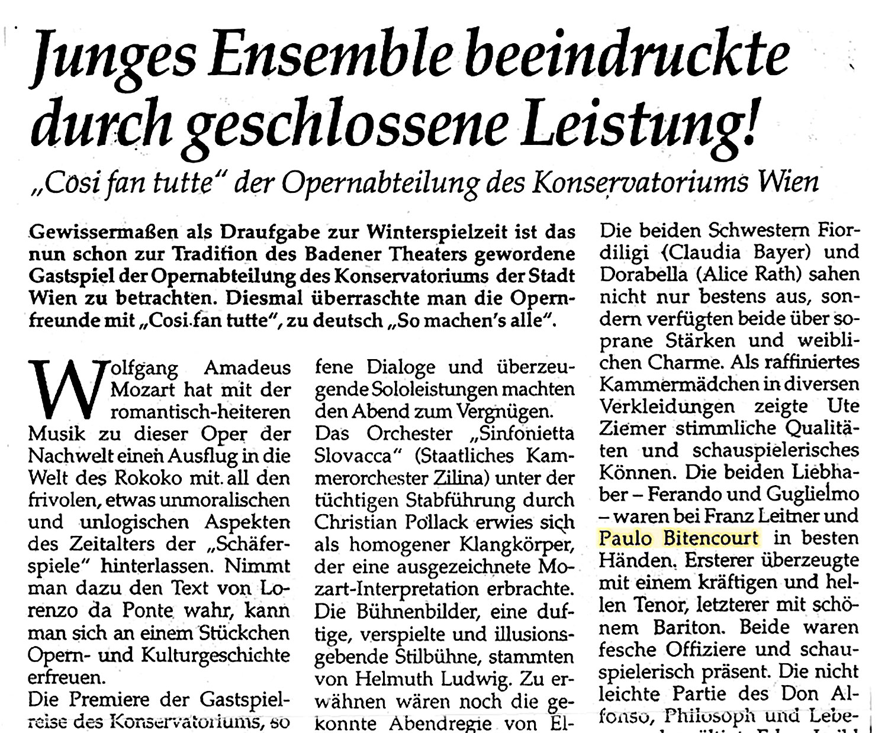Report in an Austrian newspaper: “Wolfgang Amadeus Mozart’s opera Così Fan Tutte (So Do All Women), at the Stadttheater Baden: Paulo Bittencourt’s interpretation of the lover Guglielmo was in the best of hands, who impressed with his beautiful baritone voice and excellent stage presence.”
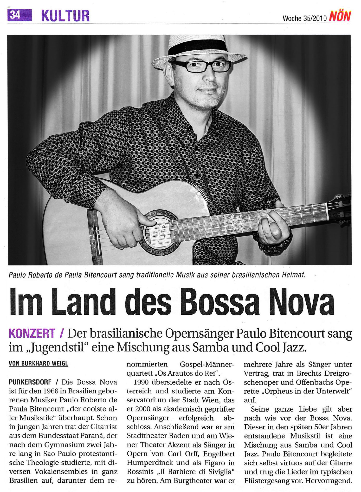In another Austrian newspaper: “Bossa nova is, for Brazilian musician Paulo Bittencourt, born in 1966, ‘the coolest of all music styles’. While still young, the musician from the state of Paraná toured with various vocal ensembles throughout Brazil. In 1990, he moved to Austria and studied at the Conservatory of the City of Vienna, where, in 2000, he successfully graduated as an academically certified opera singer. At the Stadttheater Baden and the Vienna Theater Akzent, he sang in an opera by Carl Orff and played Figaro in Rossini’s Il Barbiere di Siviglia. At the Vienna Burgtheater, he worked for several years as a contracted singer, performing in Brecht’s The Threepenny Opera and Offenbach’s operetta Orpheus in the Underworld. Nonetheless, he still devotes all his love to bossa nova. This music style, which emerged in the late 1950s, is a mixture of samba and cool jazz. Paulo Bitencourt accompanied himself virtuosically on the guitar and performed the songs in his typical whispered style.”